Meet the Fairies of
Pixie Hollow
 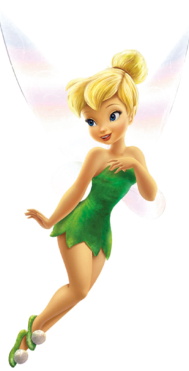
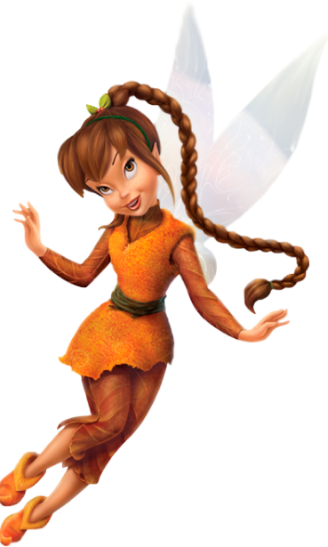
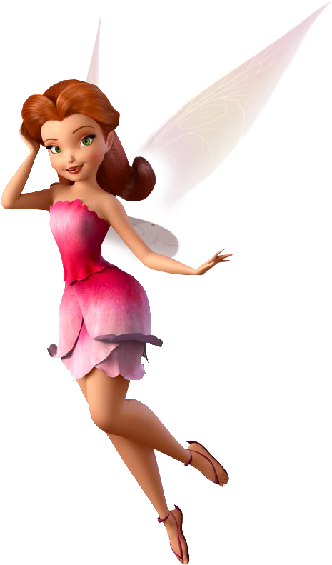
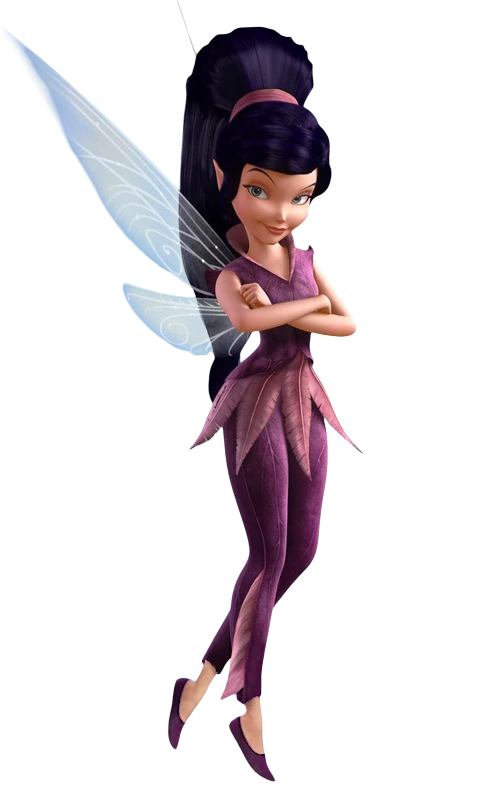
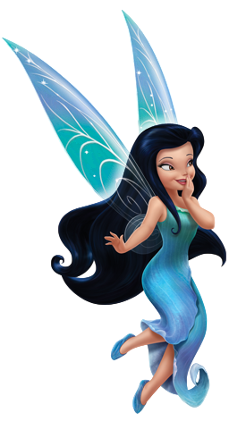
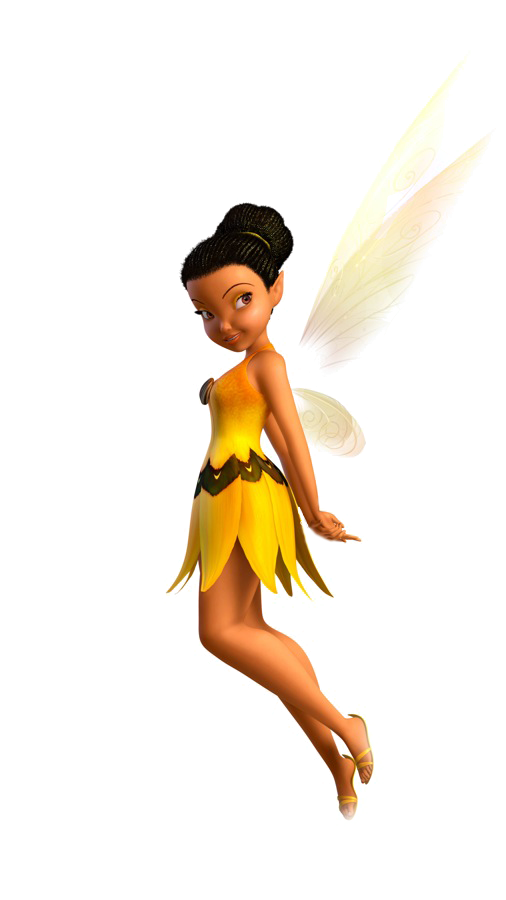
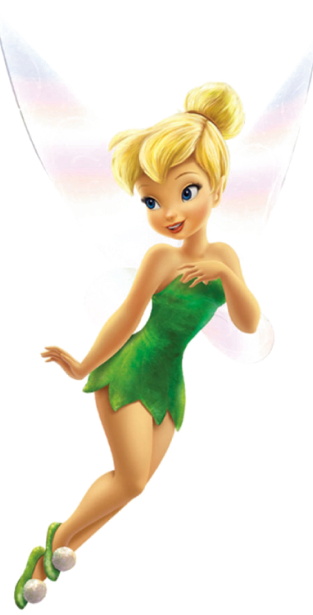
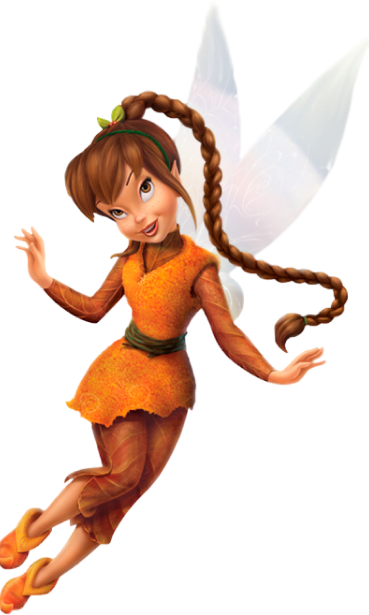
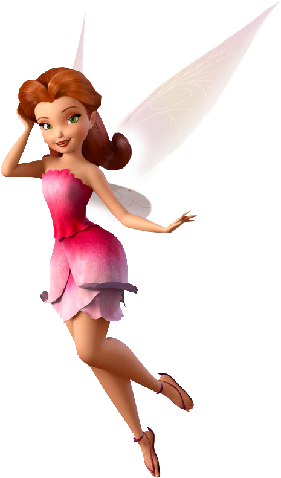
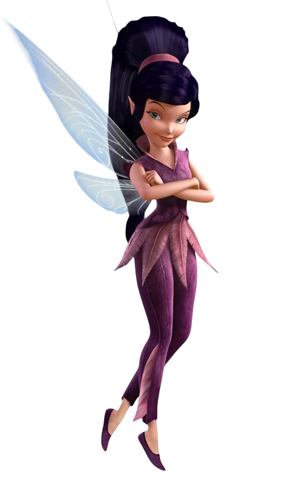
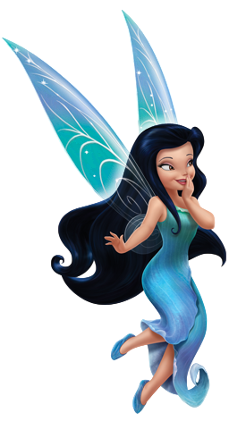
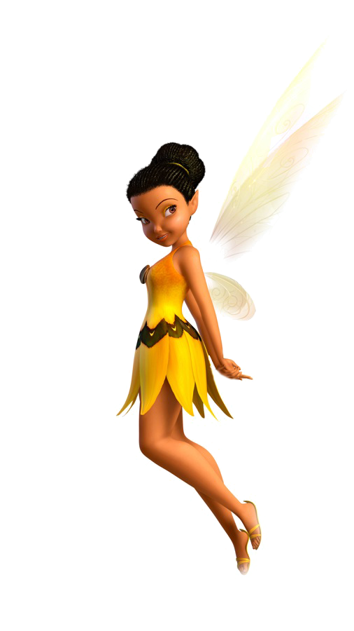
Tinker Bell: The Tinker Fairy
The Bright and Brave Fairy Tinker Bell, also called Tink, is a cheerful and clever fairy from Pixie Hollow who loves to fix and create things. She is known for her bright golden hair, green dress, and magical fairy dust that lets her fly. Tink is small but has a big personality, full of energy and courage. Though she can be a little stubborn at times, she cares deeply for her friends and always finds smart ways to help. Tinker Bell shows that even little fairies can do big and wonderful things.
Iridessa: The Light Fairy
Iridessa is a bright and cheerful fairy from Pixie Hollow who has the special talent of controlling light. With her radiant smile and a love for order, she uses her powers to bring warmth and illumination wherever she goes. Known for her sunny yellow dress and sparkling wings, Iridessa is both dependable and cautious, often helping her friends stay out of trouble. Though she sometimes worries about things going wrong, her optimism and determination always shine through. Iridessa shows that with a little light, even the darkest moments can be brightened.
Rosetta: The Garden Fairy
Rosetta is a graceful and gentle fairy from Pixie Hollow who has a deep love for flowers and gardening. With her beautiful red hair and elegant pink dress, she is always surrounded by blooming flowers and lush greenery. Known for her nurturing nature, Rosetta has a special talent for making plants grow and thrive. While she can be a bit stubborn and prefers things to be perfect, she is also caring and always ready to lend a hand to her friends. Rosetta teaches us the beauty of patience, growth, and the importance of nature in our lives.
Silvermist: The Water Fairy
Silvermist is a calm and gentle water fairy from Pixie Hollow who is known for her love of water and all things aquatic. With her flowing blue hair and shimmering outfit, she has a peaceful presence, often seen near streams, lakes, or waterfalls. Silvermist has the magical ability to control water, using it to create beautiful fountains and help in various tasks. She is kind-hearted and always ready to help her friends with a soothing, thoughtful approach. Silvermist shows that quiet strength and calmness can be just as powerful as anything else.
Fawn: The Animal Fairy
Fawn is a playful and compassionate animal fairy from Pixie Hollow who has a special bond with all creatures, big and small. With her wild, reddish-brown hair and earthy attire, she spends most of her time caring for the animals in Pixie Hollow, often using her magical abilities to heal and communicate with them. Fawn is known for her kind heart and adventurous spirit, always ready to jump into action to protect her animal friends. She may be a bit impulsive at times, but her love for animals and her fierce loyalty to her friends make her a true hero in Pixie Hollow.
Vidia: The Fast-Flying Fairy
Vidia is a confident and independent fairy from Pixie Hollow, known for her incredible speed and her sometimes sarcastic attitude. As the fastest flyer among the fairies, she is proud of her abilities and loves to race through the skies. With her dark purple attire and sleek, short hair, Vidia often exudes an air of mystery and coolness. While she can come across as aloof or a little competitive, deep down, she cares for her friends and is always ready to support them when needed. Vidia shows that being tough and strong doesn’t mean you can’t be kind at heart.